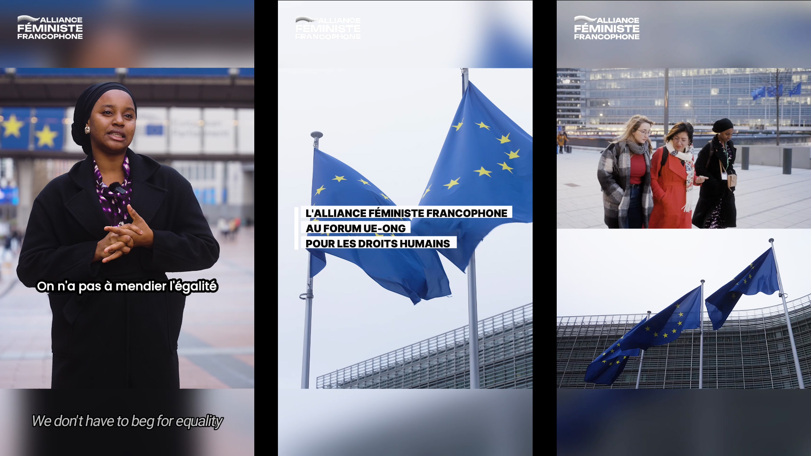
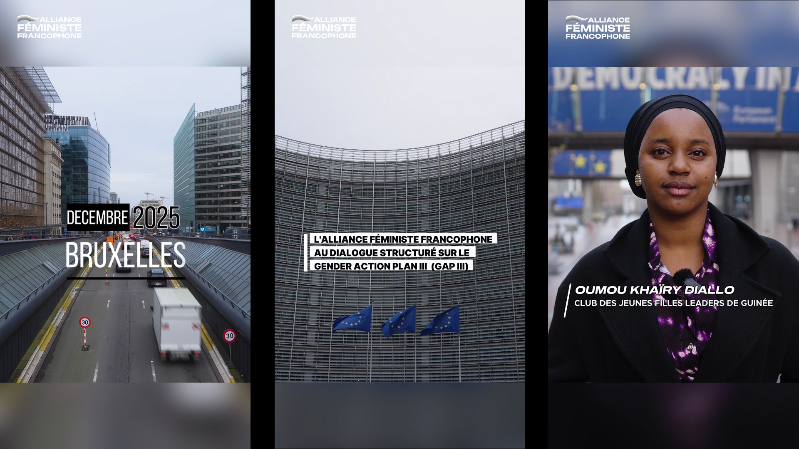
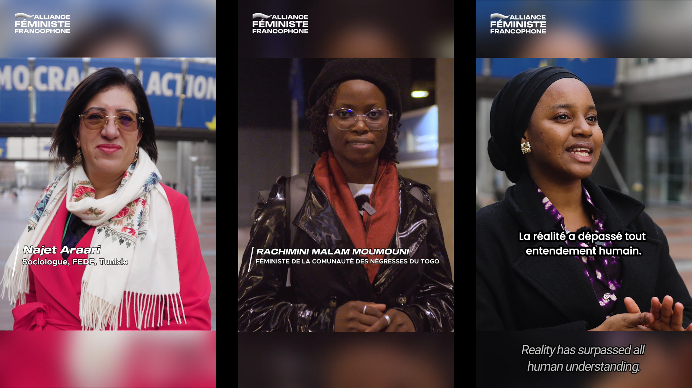
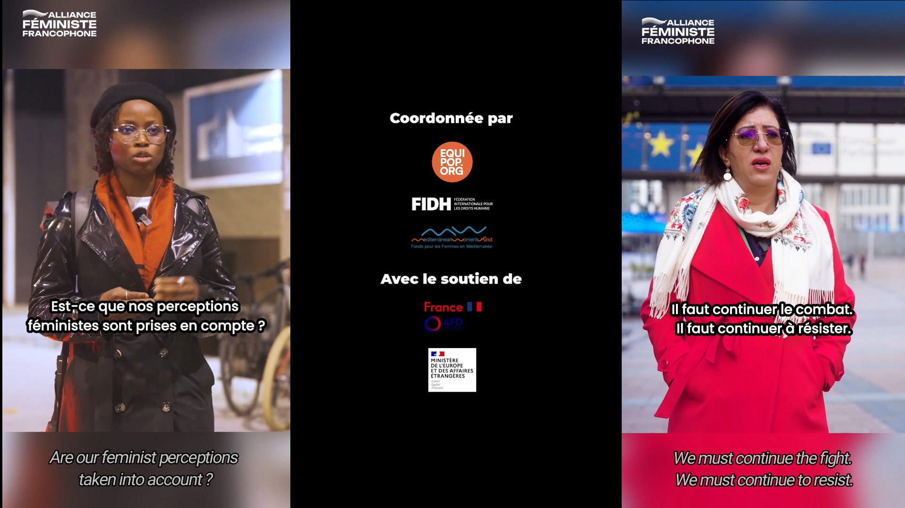

L'Alliance Féministe Francophone au forum UE-ONG pour les droits humains
Capsule pour les réseaux / reportage
Vidéo réalisée pour l'ONG Equipop et l'Alliance Féministe Francophone lors du Forum UE-ONG pour les droits humains
Réalisation: Jonas Guyaux et Emma Landet-Lacoste



